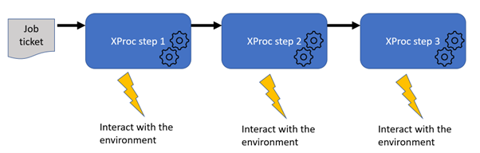
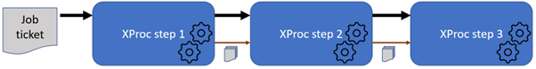

The thing that really helped writing this application well was working with what I call a “job ticket”. A job ticket is some kind of description of what the application has to do: get these files, copy them there, transform these using that stylesheet, store the result there, etc. A job ticket format can be seen as a Domain Specific Language (DSL).
I use XML as the job ticket’s format, but other (XProc supported) formats, like JSON, are of course also possible.
Let’s assume we have such a job ticket (more about this later). The clue to efficiently process this in XProc was in making it the primary document that flows through the pipeline:
|  |
Usually the documents the pipeline is about are the primary ones, the drivers of the process. But in this case, since we were doing what the job ticket prescribed, it turned out to be way easier to let the job ticket determine the flow. The underlying application logic became simpler and easier to understand.
However, there are of course still the (data) documents that are processed/produced to cater with. The way to handle this is add another port on the processing steps and pass them on through this:
|  |
In XProc, that’s easy to do, just add another (non-primary) port in the step’s prolog:
<p:declare-step … type="steps:step2" name="step2"> <!-- The job ticket is passed, unchanged --> <p:input port="source" primary="true"/> <p:output port="result" primary="true" pipe="source@step2"> <!– Documents are passed using another port (if necessary) --> <p:input port="docs-in" primary="false" sequence="true"/> <p:output port="docs-out" primary="false" sequence="true"/> … </p:declare-step>
The primary output port (called result) is defined in such a way (using its pipe
attribute) that it passes what flows in on the input port (called source) unchanged.
The docs-in and docs-out ports are defined as sequence="true",
meaning they can handle a sequence (zero or more) documents flowing through.
And here is an example of how to chain steps like this in an encompassing step:
<p:declare-step … name="encompassing-step"> … (acquire job ticket) <steps:step1 name="step1-invocation"/> <steps:step2 name="step2-invocation"> <p:with-input port="docs-in" pipe="docs-out@step-1-invocation"/> </steps:step2> <steps:step3 name="step3-invocation"> <p:with-input port="docs-in" pipe="docs-out@step-2-invocation"/> </steps:step3> </p:declare-step>
The primary document (the job ticket) “falls through” the steps, because of the implicit primary port connections. The document port connections need to made explicit.
If you need to produce console messages during processing you can use the message attribute on
steps:
<p:file-copy message="* Copying {$hrefTarget} to {$hrefTarget}"/> <p:xslt message="* Transforming …"> … </p:xslt>